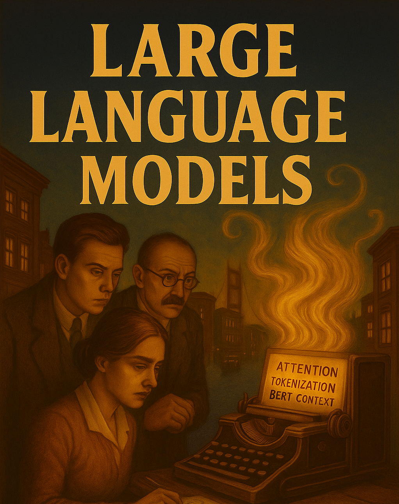

Week 01: LLM Review
Introduction to Large Language Models and AI in Data Analysis
Week 01: LLM Review
Introduction to Large Language Models and their applications in data analysis

Learning Objectives
By the end of this session, students will:
- Understand core concepts of large language models (LLMs)
- Distinguish between “Cyborg” and “Centaur” approaches to AI collaboration
- Experience the “jagged frontier” of LLM capabilities through hands-on practice
- Critically assess capabilities and limitations of AI tools in academic contexts
Preparation / Before Class
📚 No Required Reading
This is Week 1 - come ready to explore and discuss!
Reflection Preparation:
- Think about your current experience with AI tools (if any)
- Consider examples where you’ve encountered AI in your work/studies
- Identify one data analysis task you find time-consuming or repetitive
Optional Background:
- Ethan Mollick: “Co-Intelligence: Living and Working with AI” (Chapters 1-2)
Class Material
📊 Core LLM Concepts (60 min)
Slideshow: LLM Concepts and Applications
Key Topics Covered:
- What are LLMs? Statistical models predicting next tokens from massive training data
- The Transformer Revolution: How 2017’s “Attention is All You Need” changed everything
- Context Windows: why this matters for data analysis
- Training Process: Resources and human feedback
- Collaborative Frameworks: How to integrate human and AI work
🔧 Hands-on: Data search (15 min)
Example
Try this in a chat
Get me an income dataset by planning regions (county) in Connecticut for 2023. Present the results as a table I can copy and edit..- Now try find the actual data and compare.
- Try multiple times in different models
- Try modifying the prompt to be more specific or different
Discussion Questions
End of Week Reflection:
Personal AI Experience: How have you already incorporated AI into your routine? Which model feels most natural to you?
Error Management: How do you currently deal with AI hallucinations or imperfect answers? What strategies emerged during the FT graph exercise?
The Jagged Frontier: What tasks do you expect AI to excel at? Where do you think it will struggle? Did the visualization exercise match your expectations?
Assignment
Due: Sunday 23.55 before Week 2 (on moodle)
Background, Tools and Resources
Academic Integrity and AI use
Course Philosophy:
- AI as Assistant: Use AI to enhance your capabilities, not replace your thinking
- Maintain Authority: You remain responsible for all outputs and interpretations
- Verify Everything: Always validate AI suggestions, especially statistical claims
- Document Usage: Keep track of how AI helped – to learn (and for transparency)
Red Lines:
- Never submit unverified AI output as your own work
- Always understand the analysis you’re presenting
- Avoid over-reliance on AI for critical thinking or interpretation (you be you)
The Goal:
Become a more capable data analyst who can leverage AI tools effectively while maintaining scientific rigor.
Next Week:
Week 2 - Data Discovery and Documentation where we’ll use AI to understand and document complex datasets.
Some personal comments on AI and this class
- I needed to rewrite, edit the slideshow frequently. Bloody hell, this course material is tricky. (While Gosset’s t-test has been around since 1908…)
- It was an AI (Claude Sonnet 4.0) that suggest to include the last bit on Academic Integrity and red lines. Hahh.